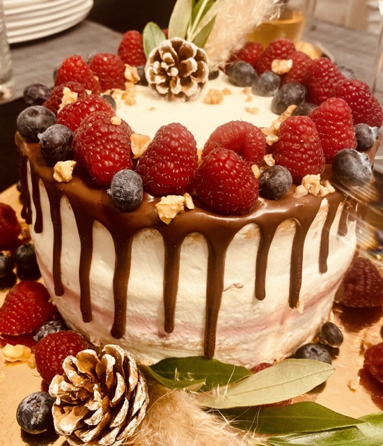
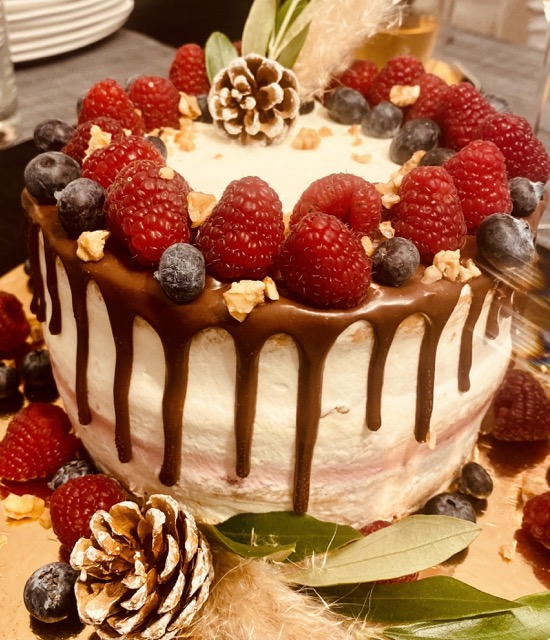

Öffnungszeiten
Dienstag & Mittwoch: 09:00 - 21:00
Donnerstag - Freitag: 09:00 - 24:00
Samstag: 08:00 - 24:00
Sonntag & Montag: Geschlossen (Anlässe auf Anfrage möglich)
Willkommen im Klopstock, deinem neuen Lieblingsort in Zürich!
Wo Geselligkeit auf gute Laune trifft. Wir sind das neue Quartierlokal mit Charme. Ein
fröhlicher Treffpunkt, wo man
sich austauscht, entspannt, verweilt und vor allem geniesst. Zusammen mit Freunden, Familie und
Arbeitskollegen.
Eröffnung am Samstag, 18 Mai 2024
| Espresso | 19,90 |
| Kaffee | 14,90 |
| Milchkaffee | 12,90 |
| Latte Macchiato | 9,90 |
| Cappuchino | 16,90 |
| Trinkschokolade | 11,90 |
| Bongani Rooibos | 19,90 |
| Claire Verveine | 14,90 |
| James Earl Grey | 12,90 |
| Namaira Pfefferminz | 9,90 |
| Sarala Chai | 16,90 |
| Yanzhou Pi Lo Chun (Grüntee) | 11,90 |
| Wasser | 19,90 |
| Wasser mit Kohlensäure | 14,90 |
| Züri Wasser offen | 12,90 |
| Hausgemachter Ice Tea | 9,90 |
| Hausgemachte Limonade (Saisonal) | 16,90 |
| Cola / VIVI oder Goba – Würde ich Goba nehmen | 11,90 |
| Cola Zero | 11,90 |
| ChariTea Mate BIO FAIR TRADE | 11,90 |
| ChariTea Red Rooibos/Passion BIO FAIR TRADE | 11,90 |
| Goba orange | 11,90 |
| Goba Cola / Zero | 11,90 |
| Goba Citron | 11,90 |
| Tonic | 11,90 |
| Ginger ale | 11,90 |
| Appenzeller Quöllfrisch Offen | 19,90 |
| Appenzeller | 14,90 |
| Bier Flasche 3dl | 12,90 |
| Quöllfrisch naturtrüb | 9,90 |
| Weizenbier | 16,90 |
| Ginger Beer (alkoholfrei) | 11,90 |
| Leermond Bier (alkoholfrei) | 11,90 |
| Martini | 19,90 |
| Negroni | 14,90 |
| Negroni Spagliato | 12,90 |
| Old Fashioned | 9,90 |
| Last Word | 16,90 |
Alle Preise in CHF inkl. MwSt.
Charmant, authentisch, humorvoll und mit ganzem Herzen dabei… Das sind wir, Martina & Fabio, Vollblut-Gastronomieprofis, die lieben, was sie tun.
Ich absolvierte eine Ausbildung zur Konditorei-Confiseurin und verfeinerte mein Können über einige Zeit, bevor ich die Hotelfachschule im Belvoir Park abschloss. In einem bekannten Restaurant in der Nähe des Zürichsees stellte ich mein Knowhow unter Beweis. Ein Gast erkannte meine Qualitäten als Gastgeberin und machte mir ein Angebot: Kurze Zeit später leitete ich im Wagerenhof Uster das Ressort Gastronomie. Bis zur Eröffnung der Café-Bar Klopstocks blieb ich dem Wagerenhof treu, übernahm immer wieder neue Aufgaben und war unter anderem für Kundenanlässe und Events verantwortlich.

2004 absolvierte ich meine Lehre als Gastronomiefachassistent im Hotel Schweizerhof. Danach vertiefte ich meine Kenntnisse während einiger Jahre in verschiedenen Restaurants in Graubünden. Nach einer längeren Reise kehrte ich den Bergen den Rücken und begann im Wagerenhof Uster unter der Leitung von Martina zu arbeiten. Nach einiger Zeit konnte ich die Ausbildung zum Arbeitsagogen abschließen und verließ den Wagerenhof, um für die Stadt Zürich im Planet 5 zu arbeiten. Nach einer Weiterbildung verließ ich den Planet 5 und arbeitete bis zur Eröffnung als Berater für Jugendliche im Motivationssemester.
In den sieben Jahren unserer Zusammenarbeit ist der Wunsch und die Idee, etwas Eigenes zu schaffen, immer stärker geworden, und nun wird dieser Traum Wirklichkeit. Überzeuge dich selbst von unserem Können und unserer Leidenschaft, genieße einen unbeschwerten und gemütlichen Aufenthalt bei uns in der Café-Bar Klopstock.
Wir kennen jedes Geheimnis rund um den Kaffee. Richtig in die Gänge bringen dich unsere «Pains au Chocolats» und frisch zubereiteten Granola Müslis.
Das Focaccia füllen wir mit Zucchetti, Peperoni, Rucola und einem würzigen Pesto. Ins Toastbrot klemmen wir Käse, Salat & Co, unser Panini-Grill sorgt für den Rest.
Gelernt ist gelernt. All unsere Back-Kunstwerke passen zur Jahreszeit. Je nach Saison riecht es in unserer Backstube nach Aprikosen-Streusel oder Zimt-Hefe-Schnecken.
Unsere Feierabend-Bar lässt dich den Tag vergessen. Wir servieren dir ein gutes Glas Wein, mixen einen spritzigen Lillet und stillen den kleinen Hunger mit leckeren Häppchen.
 

Cafe Bar Klopstock
Klopstockstrasse 23
8002 Zürich